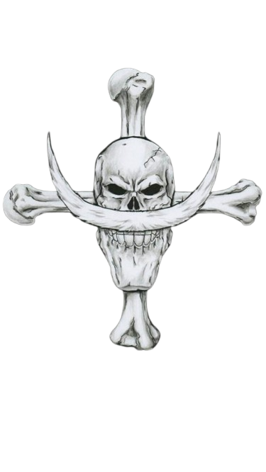
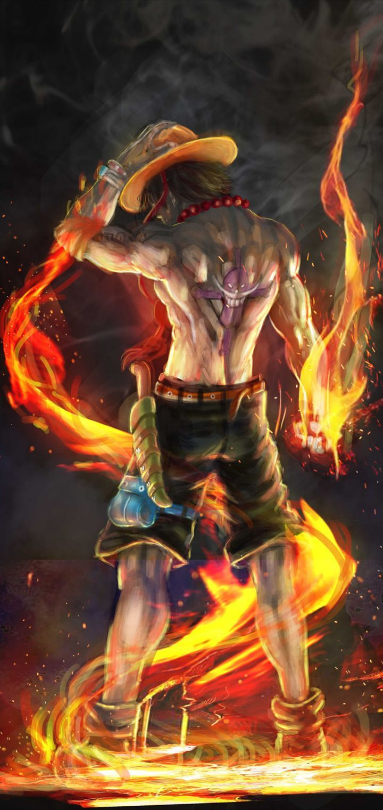
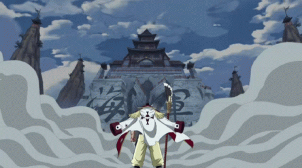
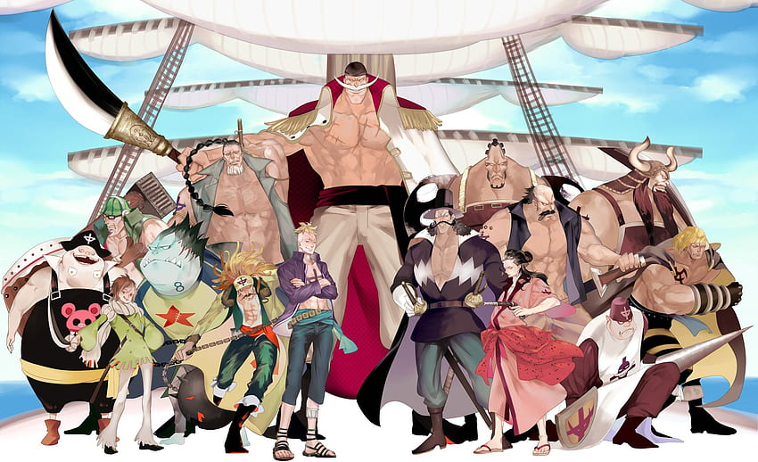
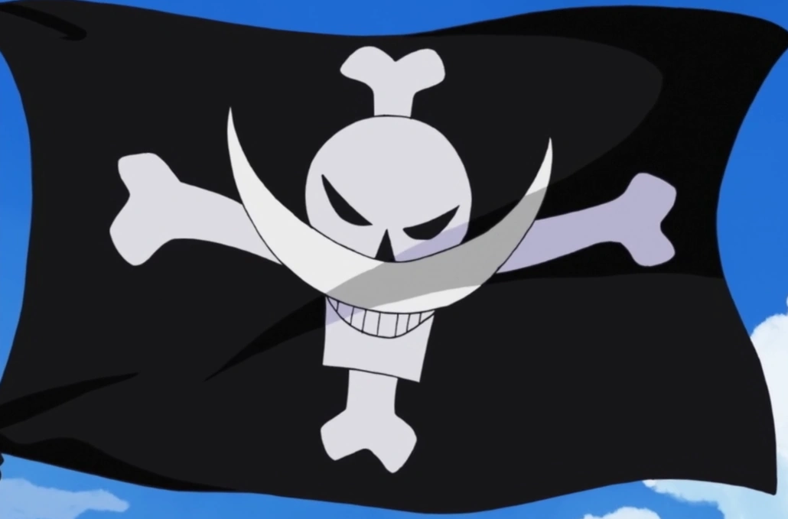
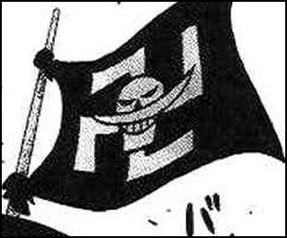

CURIOSIDADES DO BARBA BRANCA

Ace não é filho biológico de newgate, mas era membro de sua tripulação, portanto membro de sua família. O pai biológico de Ace é na verdade, Gol.D.Roger, antigo rival do Barba Branca.

Após se tornar o rei dos piratas ele dissolve sua tripulação e se entrega para a marinha por acreditar que “Nasceu no momento errado e chegou até o One Piece cedo demais”.Ele então é executado pela marinha na ilha de Loguetown, onde nasceu e cresceu,antes de ser morto ele disse: “Meu tesouro?!Podem pegar! Procurem! Deixei tudo naquela ilha. Roger transformou sua execução no início de uma nova era dos piratas, incentivando todos a procurarem por Laugh Tale, e lançando centenas de milhares de piratas nos mares sem revelar exatamente o que o tesouro é.

A frota de Newgate erá composta por mais de 1.600 piratas e outras 43 tripulações aliadas ao redor do mundo. Seu navio principal se chamava Moby Dick.


A frota de Newgate erá composta por mais de 1.600 piratas e outras 43 tripulações aliadas ao redor do mundo.Seu navio principal se chamava Moby Dick.